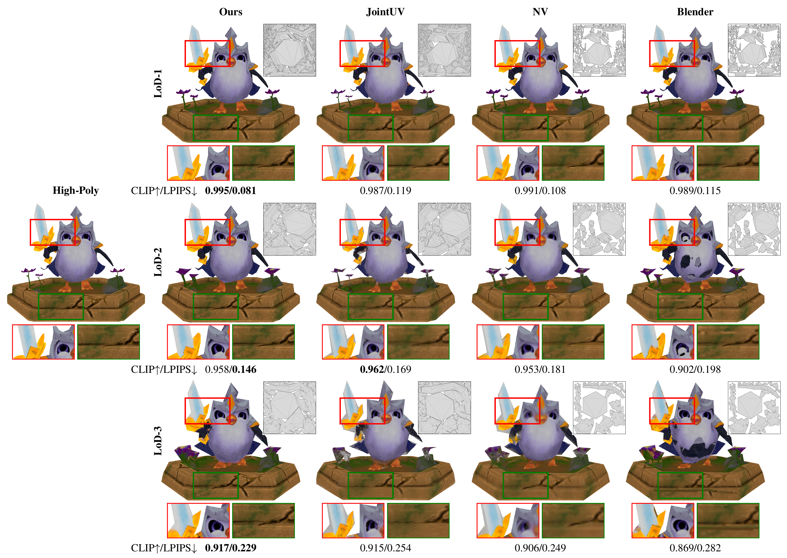

LoD Texture Baking via Explicit Correspondence and Joint Differentiable Optimization
Department of Computer Science and Technology, Tsinghua University
Submitted to IEEE TVCG, 2026 (Under Review)
Abstract
Texture baking on a low-poly proxy is fundamentally limited by geometric mismatch. Geometry-driven baking establishes local surface correspondences, but cannot guarantee visually reasonable matches. Image-driven differentiable rendering optimizes the rendered result directly, but the optimizer must absorb errors caused by misaligned geometry, often producing blurry textures. We propose a method that combines the strengths of both views. We use inverse projection to compute candidate low-poly correspondences and apply statistics-based pixel masks to reject matches that are inconsistent across views. For texture optimization, an inpaint mode provides fallback supervision where no valid projection exists, while a projection mode refines the texture from trusted correspondences. For UV optimization, a scale-invariant energy decouples distortion control from area allocation. The two stages alternate to jointly optimize appearance and the UV layout. By separating geometric correspondence from optimization, our method supplies cleaner gradients to the texture optimizer while adapting the atlas to the appearance distribution on the simplified mesh. Experiments on multiple assets demonstrate improved texture baking quality compared with existing geometric and differentiable rendering baselines.
Result

We bake textures onto a low-poly proxy of the Pengu model at three LoD levels and compare against JointUV, NV (NVDiffModeling), and Blender. Each row shows one LoD level, and from left to right we show the high-poly reference, our result, JointUV, NV, and Blender. Each cell displays the rendered image with the UV atlas overlaid, along with two close-up crops of challenging regions. By explicitly resolving high–low correspondences and jointly optimizing textures and UVs, our method preserves sharper details and avoids color bleeding. CLIP↑/LPIPS↓ scores below each cell are computed over the full view (best in bold).